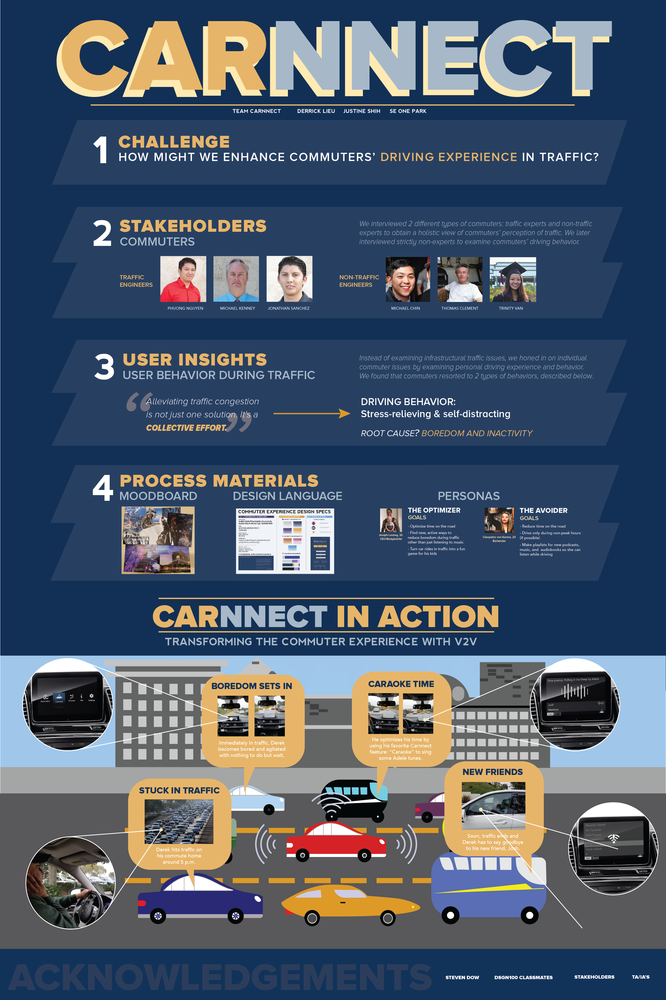

A prerequisite case study for
Design 4 San Diego (D4SD) 2017 Civi Design Challenge
In an effort to solve complex human problems using human-centered design, UCSD announced a city-wide civic challenge for San Diegans to tackle.
My team's topic was on traffic. How can we solve traffic, a phenemenon that exists because people, cars, and cities exist? Our solution was not a solution
that resolved traffic, however, we shifted gears from that to "how can we improve and enhance commuter experience while in traffic?" In the end
we came up with "Carnnect," an car application that would use Vehicle-to-Vehicle (V2V) communication to create a network and community of users stuck in
same traffic to interact with one another, keeping each other positive, entertained, and less stressed.
Design Challenge + My Role
How might we enhance commuter's driving experience while in traffic? For my role on the team of 2 others,
I was the main user researcher as well as the visual designer who made conscious decisions throughout the challenge to figure
out important elements that would best portray and communicate our problem space, user research, prototypes, and final solution.
The Problem Space + Observations
Before tackling the issue head-on, we had to know the local traffic scene, infrastructure as well as the behaviors of cars/drivers.
We wanted to get a holistic view of traffic so we made three different drives on the 5 freeway both ways: one in the morning, one in the late
afternoon, and one at night. We tried to empathize with those stuck in traffic through different times in the day. Traffic isn't solvable with
our current technology, infrastructure, and knowledge thus we looked toward mitigating the frustration that users faced while stuck in traffic.
Understand: Taking Two Perspectives
There were two main proponents in understanding traffic behavior and experience: professionals whose jobs are
to relieve traffic congestion and normal everyday citizens who experience traffic on a 9-to-5 day basis. In the initial
week of the 5 week long project, we had contacted various professional traffic engineers/city-planners as well as looked
for potential user interviews around the local La Jolla region. The everyday commuters, we interviewed 8 different people of
various age, occupations, culture, gender, and race for a more accurate, holistic understanding of their traffic experience.
We also were fortunate enough to have been invited to a local traffic engineer industry located in Downtown San Diego.
1. Commuters
For commuters, we interviewed a variety of ages, gender, occupations, and cultures about their experiences in traffic such as where they
encountered traffic, "giving us the grand tour" of their daily lives through traffic, as well as some of their driving behaviors.
After interviewing commuters, we did a root cause analysis on why commuters get frustrated in traffic and dug deeper to understand the reasoning
behind the frustration. What was it that made traffic so infuriating for drivers? We also created a context chart for various driver behaviors such as
talking to the person next to them, stretching at a stop, talking on the phone and so forth. This helped us better understand driver behavior as well as
design a solution to accommodate them.
2. Chen Ryan Traffic Engineers
I was able to get into contact with two Chen Ryan employees who from there we were invited into their
office space to interview more traffic engineers each with their own area of expertise.
We interviewed four different traffic engineers all part of the Chen Ryan mobility company located
in Downtown San Diego and asked each of them specific questions regarding local San Diego traffic such as existing
issues including infrastructural limitations, governance and policies revolving around driving, driver behavior, current solutions
being implemented, as well as future solutions such as autonomous vehicles, vehicle-to-infrastructure technology.
Personas
Personas were essential to making sure that we had the right problem and were heading towards creating the right solution
for traffic. We had to understand the stakeholders involved in the issue, as well as the types of personalities, occupations,
behaviors, etc involved in the process. We came up with two main personas: The Optimizer and The Avoider .
Convergent Ideation: Brainstorming + Narrowing Down
With the knowledge we gained from interviewing professional traffic engineers as well as scrutinizing various academic journals and articles on traffic congestion,
we realized that traffic was unsolveable with our current limits in technology, infrastructure, and manpower. While we might not be able to solve traffic, we can definitely
make the experience of those stuck in traffic much more comfortable. Therefore, we wanted to transition from trying to solve traffic to mitigating the frustration and anger
that drivers in traffic felt and potentially channel it into something positive and productive. In class, we held a brainstorm ideation session in which
other teams assisted in throwing out ideas in how we would be able to implement our idea of enhancing the commuter experience. Below is some samples of the questions we asked
in order to understand driver behavior in and out of traffic.
Prototype: Low Fidelity Live Action
In making a paper prototype of our application "carnnect", we were able to better understand the interface and interactions
that a user would make as well as behaviors and decisions that our users would encounter while driving in traffic. In using Carnnect,
the user would have to be first stuck in traffic (stuck in less than 20mph speeds). If that condition is met, carnnect will detect nearby
users also using carnnect. Once connected, users will be able to decide on the "game" they will play together which includes and is not limited
to "caraoke," "discussions," "music," "podcast," or "games," keeping all users satisfied and giving them the potential to create memories on the road
to keep.
Design Specs + Moodboard
For our design specifications, we created a branding guide similar to that of the colors of the UC, which uses the navy blue and gold which are colors
that respectively represent sleek, cool modernity as well as royalty and luxury in a combined effect for a calming, feel-good design when we completed
our poster.
Prototype: High-Fidelity Mock-up
In the high-fidelity mock-up of the "Carnnect" app, we wireframed the actual interface of how the Carnnect app would look, feel, and interact
with the user. With this, we were better able to visualize and understand user's interactions with the app, with others in traffic, as well aside
consequences and safety concerns with using an app like this.
Carnnect
This last section illustrates the final product of our entire design process; a giant 36' by 56' poster outlining our design process of
posing the design problem, interviewing various stakeholders, storyboarding and prototyping, as well as implementing the final solution and
communicating the idea through this visual medium. While discussing with my group members and collecting and analyzing
all the data we gathered up to this point in the project, I was able to design the poster along with various iterations of it
to best convey our problem space as well as our proposed solution of "Carnnect."

At the end of the 5 week project, we had to give a one-minute pitch to an audience of professional
and industry designers as well as our peers and after that we held a design fair where we'd pitch our idea and solutions to the various attendees. Our poster
and solution were well-received, however, some had issues with the feasibility of the vehicle-to-vehicle connectivity which we had not done enough research on.
This was an aspect in our project that we could have spent more time.